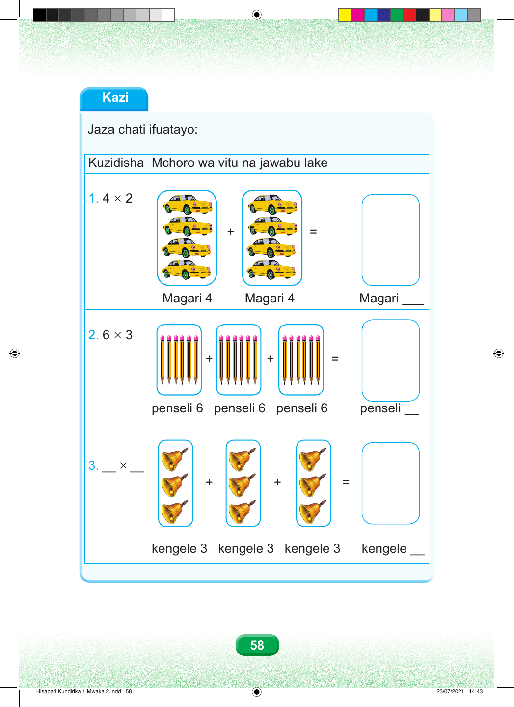

Kazi Jaza chati ifuatayo: Kuzidisha Mchoro wa vitu na jawabu lake 1. 4 × 2 + = Magari 4 Magari 4 Magari ___ 2. 6 × 3 + + = penseli 6 penseli 6 penseli 6 penseli __ 3. __ × __ + + = kengele 3 kengele 3 kengele 3 kengele __ 58 Hisabati Kundirika 1 Mwaka 2.indd 58 23/07/2021 14:43